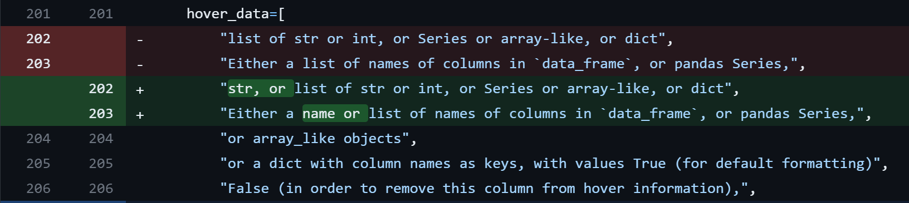

I'm amazed by both the success and philosophy of open source projects. Essentially all the tools I use and benefit from at my job and on this for-fun website are free and open source -- which is pretty insane to consider.
I've ran into what I believed would be a small but useful improvement to an open source library I love, plotly, and decided I would take the plunge and try contributing a solution to it myself. In this post I'll document the process in all its details in hopes it inspires other folks who may be interested in open source but perhaps find it a bit daunting.
My favorite--and dare I deem it simply "the best"--data viz package in Python is plotly. Here is a toy example plot using one of the package's built in datasets, the famous tips dataset.
import plotly.express as px
# Getting tips data striaght from plotly
df = px.data.tips()
# Creating scatter plot!
px.scatter(
df,
x='total_bill',
y='tip',
color='sex',
hover_data=['day'],
)
Overall, it is quite easy and intuitive to create high quality interactive plots by simply passing a DataFrame and specifying the args/parameters simply with the column names of the DataFrame.
But one thing that often trips me up is that nearly every argument can pass a string of a column name or optionally a list of column names -- but hover_data always requires a list. Worse yet when you try passing a string as follows...
import plotly.express as px
df = px.data.tips()
px.scatter(
df,
x='total_bill',
y='tip',
color='sex',
hover_data='day', # Passing string, not list
)
You get the following strange error:
ValueError: Value of 'hover_data_0' is not the name of a column in 'data_frame'.
Expected one of ['total_bill', 'tip', 'sex', 'smoker', 'day', 'time', 'size'] but received: d
Which is also misleading since it claims it 'day' was one of the values it expected but I in fact did pass that! Given this error is misleading and in order to be more consistent with almost all other arguments that allow a single string I decided to dive in and try to allow strings to be passed! This seemed like a very easy problem to solve, I figured all I have to do is check if the argument passed is a string and at a minimum I could simply cast it as a one item list, so I went looking to do that!
The first thing I did was go through the whole readme which led me to their awesome Contributing.md file. This document had a whole Setup a Development Environment section which I started following to a tee.
Despite following the steps in order when I got to the pip install -e packages/python/plotly/ line I got a long error in my terminal essentially stating 'npm' unavailable. Googling the error message I found a StackOverflow question with a similar error message, and went with the second answer of simply running conda install -c conda-forge nodejs which then allowed me to run the original editable pip install of plotly above. I then opened an issue on plotly noting the steps, error, and resolution in case any other folks run into the same problem when trying to get set up.
At the end of the Setup Guide, thinking I was just about done with no more errors, it gives the following command to run the test suite pytest packages/python/plotly/plotly/tests/ but I got another long error ending in TypeError: required field "lineno" missing from alias. A quick google suggested simply updating pytest with pip install pytest --upgrade which did the job! At this point I did not get any errors running the test suite however a few tests still failed. Looking through the issues on the repo it appeared this happened to others as well (and some were clearly because I was using a Windows machine and I would fail because No reference images available for platform: win32), thus I decided I was "set up enough" and ready to start fixing hover_data to allow strings!
The quick takeaway of this section is that environments often look easy to setup in instructions and tutorials, etc. but often don't go so smoothly in practice. But generally, googling your way through each error as they pop up will eventually get you there.
To find where the problem occurs, I first ran the "broken" code again and looked through the whole traceback message:
---------------------------------------------------------------------------
ValueError Traceback (most recent call last)
<ipython-input-1-3e804152ef34> in <module>
8 y='tip',
9 color='sex',
---> 10 hover_data='day',
11 )
~\AppData\Local\Continuum\anaconda3\lib\site-packages\plotly\express\_chart_types.py in scatter(data_frame, x, y, color, symbol, size, hover_name, hover_data, custom_data, text, facet_row, facet_col, facet_col_wrap, facet_row_spacing, facet_col_spacing, error_x, error_x_minus, error_y, error_y_minus, animation_frame, animation_group, category_orders, labels, orientation, color_discrete_sequence, color_discrete_map, color_continuous_scale, range_color, color_continuous_midpoint, symbol_sequence, symbol_map, opacity, size_max, marginal_x, marginal_y, trendline, trendline_options, trendline_color_override, trendline_scope, log_x, log_y, range_x, range_y, render_mode, title, template, width, height)
64 mark in 2D space.
65 \"""
---> 66 return make_figure(args=locals(), constructor=go.Scatter)
67
68
~\AppData\Local\Continuum\anaconda3\lib\site-packages\plotly\express\_core.py in make_figure(args, constructor, trace_patch, layout_patch)
1989 apply_default_cascade(args)
1990
-> 1991 args = build_dataframe(args, constructor)
1992 if constructor in [go.Treemap, go.Sunburst, go.Icicle] and args["path"] is not None:
1993 args = process_dataframe_hierarchy(args)
~\AppData\Local\Continuum\anaconda3\lib\site-packages\plotly\express\_core.py in build_dataframe(args, constructor)
1405
1406 df_output, wide_id_vars = process_args_into_dataframe(
-> 1407 args, wide_mode, var_name, value_name
1408 )
1409
~\AppData\Local\Continuum\anaconda3\lib\site-packages\plotly\express\_core.py in process_args_into_dataframe(args, wide_mode, var_name, value_name)
1206 if argument == "index":
1207 err_msg += "\n To use the index, pass it in directly as `df.index`."
-> 1208 raise ValueError(err_msg)
1209 elif length and len(df_input[argument]) != length:
1210 raise ValueError(
ValueError: Value of 'hover_data_0' is not the name of a column in 'data_frame'. Expected one of ['total_bill', 'tip', 'sex', 'smoker', 'day', 'time', 'size'] but received: d
In this long message we see:
scatter function which lives in plotly\express\_chart_types.pymake_figure function which lives in plotly\express\_core.pybuild_dataframe function which also lives in plotly\express\_core.pyprocess_args_into_dataframe function which also lives in plotly\express\_core.pyValueError that 'hover_data_0' is not a column in 'data_frame'.In order to walk through code easily I opened up VS Code and pasted my broken example into a small python file I called changes-debugging.py and then made sure the Interpreter was my plotly-dev environment from the setup guide.
Now I added my breakpoint...
And we're ready to run with the debugger! Time to hit Ctrl+F5 üèÅ.
When we first step into the px.scatter call, unsurprisingly we get to where scatter is defined in Plotly, which is shown (slightly truncated) below. All it is doing is immediately just calling make_figure and passing the current args as well as a constructor for go.Scatter. Let's take another step in!
def scatter(
data_frame=None,
x=None,
y=None,
color=None,
size=None,
hover_data=None,
custom_data=None,
... # Many other args excluded for brevity
height=None,
) -> go.Figure:
"""
In a scatter plot, each row of `data_frame` is represented by a symbol
mark in 2D space.
"""
return make_figure(args=locals(), constructor=go.Scatter)
Note that technically the next step in was to the locals which isn't very helpful for us, so I stepped right out of there then went into make_figure to look around.
Now, I'm looking around make_figure which is just shy of 300 lines (shown below truncated). Thankfully it is on the 4th line that I see the build_dataframe function from the traceback message. I took a look into the apply_default_cascade but it appears to just apply defaults for any arguments you didn't explicitly pass and didn't seem to mess with our hover_data arg.
def make_figure(args, constructor, trace_patch=None, layout_patch=None):
    trace_patch = trace_patch or {}
    layout_patch = layout_patch or {}
    apply_default_cascade(args)
   
    args = build_dataframe(args, constructor)
    ... # Continues another ~300 lines
build_dataframe function ü•ÖSo I then went on to the build_dataframe function. This is another long function but there's a peculiar looking loop sitting right at the start. Given it's looping over all the args I stepped through the loop about 10 times until the field was my hover_data argument.
def build_dataframe(args, constructor):
# make copies of all the fields via dict() and list()
for field in args:
if field in array_attrables and args[field] is not None:
args[field] = (
dict(args[field])
if isinstance(args[field], dict)
else list(args[field])
)
...
Looking through the variables in scope it looks like array_attrables is a list of which hover_data indeed is an item. And since args['hover_data'] has the value of the 'day' string that we passed it is of course not None and thus we make it into the if statement.
Now, that code (lines 1297-1300) is updating args['hover_data'], and it will cast it as a dictionary if it is already an instance of dictionary (not exactly sure why but I'll ignore that for now since we're not passing a dictionary), otherwise it casts our value as a list.
There's the bugüêû! In Python, passing a string to list returns a list of each character not simply a list of a single item of our original string. And this is exactly what we see below after running this line, our 'day' string value becomes a very unhelpful list of ['d', 'a', 'y'], as shown in the screenshot below.
At this point, it's abundantly clear that that line is the source of the problem. For sake of completeness though I clicked continue in the debugger. This took me to the process_args_into_dataframe function that we saw from our traceback and the raise ValueError line. We can see we hit this error because argument was not in df_input.columns as it turned into a list of characters.
It's thus pretty clear that we want to fix the list(args[field]) line. The simplest solution seemed to be simply adding another condition to check hover_data was passed as a string, and if so just convert it to a one item list. Since this is an extra condition we'll have to break out the single statement if/else assignment into an actual if elif else block.
I also went through all the possible args of the px.scatter documentation and looked for any other args that were not allowed to be a string and found that custom_data had the same problem. Thus I updated my plotly branch as follows:
# Broken original ❌
args[field] = (
dict(args[field])
if isinstance(args[field], dict)
else list(args[field])
)
# Updated fixed ✅
if isinstance(args[field], dict):
args[field] = dict(args[field])
elif field in ["custom_data", "hover_data"] and isinstance(args[field], str):
args[field] = [args[field]]
else:
args[field] = list(args[field])
It's not necessarily the prettiest, particularly the hardcoded values check, but it was the simplest little update that I wanted to start with at least as a proof of concept for my eventual pull request. With this change I reran my testing file and it worked! I then double checked in a Jupyter Notebook where it's easier to immediately see the figures, as shown below:
Since the documentation does not include strings as allowed types to pass to hover_data and custom_data, it seemed fitting to update the docs in my PR. The slight challenge here is trying to find where the docs are located.
I first opened up the plotly folder in Sublime from within my plotly-debug Anaconda environment (it was easy finding this path since VS Code shows the path of the current file being debugged), in my case it was located at:
C:\Users\lukef\AppData\Local\Continuum\anaconda3\envs\plotly-debug\Lib\site-packages\plotly
I switched to Sublime because I like their Ctrl+Shift+F regex search across all files (probably doable in VS Code but this sufficed). Thankfully simply searching hover_data only returned 5 files one of which was quite obviously the docs:
C:\Users\lukef\AppData\Local\Continuum\anaconda3\envs\plotly-debug\Lib\site-packages\plotly\express\_doc.py
It looked like all the text was simply in a list of strings for hover_data so I adjusted it slightly to allow for strings and specified when it's the name of a column in the data_frame, taking notes from the docs of other now similar arguments.

But custom_data looked a bit different, as shown below. It looks like they just stored variables colref_list_type and colref_list_desc that were used across similar args with similar allowed types.
hover_data=[
"list of str or int, or Series or array-like, or dict",
"Either a list of names of columns in `data_frame`, or pandas Series,",
"or array_like objects",
"or a dict with column names as keys, with values True (for default formatting)",
"False (in order to remove this column from hover information),",
"or a formatting string, for example ':.3f' or '|%a'",
"or list-like data to appear in the hover tooltip",
"or tuples with a bool or formatting string as first element,",
"and list-like data to appear in hover as second element",
"Values from these columns appear as extra data in the hover tooltip.",
],
custom_data=[
colref_list_type,
colref_list_desc,
"Values from these columns are extra data, to be used in widgets or Dash callbacks for example. This data is not user-visible but is included in events emitted by the figure (lasso selection etc.)",
],
Given that hover_data was already all "hardcoded", and the other colref_list_type args truly needed to be lists (like dimensisons), it seemed sufficient to hardcode strings in the same vein as hover_data.
With all these changes committed it was time to submit a PR! You can read the whole PR here which really is just a very quick summary of all that I've written here but made sure to
One of the maintainers thanked me for the PR and asked if I would mind adding tests. So I first opened the tests directory in Sublime and searched for hover_data to see what existed already. I was pleased to find there was a full on tests/test_optional/test_px/test_px_hover.py.
Following suit of the other tests I added my simple example from the PR as a test:
def test_hover_data_string_column():
df = px.data.tips()
fig = px.scatter(
df,
x="tip",
y="total_bill",
hover_data="sex",
)
assert "sex" in fig.data[0].hovertemplate
There was also a test_fail_wrong_column that tested both lists passed and dictionaries passed, so I updated it to test the "bare" strings as well, and made it a little loop with a comment:
# Testing for each of bare string, list, and basic dictionary
for hover_data_value in ["d", ["d"], {"d": True}]:
with pytest.raises(ValueError) as err_msg:
px.scatter(
{"a": [1, 2], "b": [3, 4], "c": [2, 1]},
x="a",
y="b",
hover_data=hover_data_value,
)
assert (
"Value of 'hover_data_0' is not the name of a column in 'data_frame'."
in str(err_msg.value)
)
I then ran pytest packages/python/plotly/plotly/tests/ and all my tests passedüéâ.
Actually some random other tests failed because I apparently did not install all the external dependencies. After installing them I was able to get them all working.
And with my added tests, I committed and pushed the changes to my PR which was merged in not long after.
Overall it was a cool experience. Maybe not too surprising but all the setup and little bells and whistles were the hardest part -- the actual problem was very easy to solve. Definitely next time I see a potential small improvement with a library I use I will be excited to contribute!
I scraped the data from this Top 100 Plotly Contributors page on the Plotly GitHub, which I come in at number 40 (at the time of writing this). Now for fun here's a few visuals showing how I rank up after my one contribution üòâ. First here's the additions vs deletions. Note the log scaled axes. We can see that most people tend to make more additions than deletions. It also looks strongly linear at least with the log axes. Even without a unity line plotted it's clear the few outliers who made more deletions than additions.
I've yet to find them particularly helpful, but hey, we've got 3 numerical columns -- might as well go 3DüöÄ.
And let's go a bit more practical and minimal and see how I stack up with just additions.
That's all folks, hope you enjoyed the showüçø.